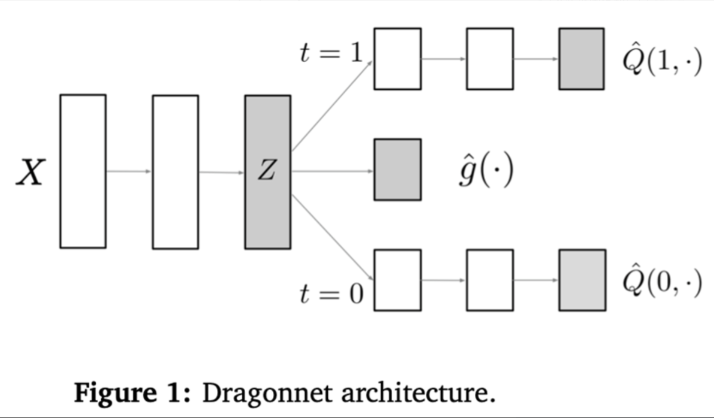
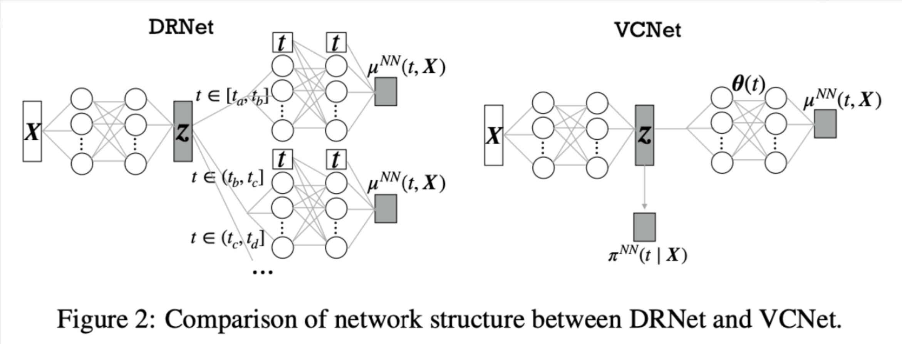

03 · 深度参与 · 2025–2026
高额度使用率风险用户的降额策略：离散与连续 Treatment
传统风险模型回答谁更容易逾期；本项目改为估计对谁降额能真正降低风险，以及应当降多少，把相关性排序推进为个体化干预决策。
- DragonNet 人均逾期金额
- -13.35%
- 整体金额违约率
- -0.38%
- 离散干预决策点
- 31 分位
项目背景｜高风险用户降额后，风险反而上升
策略冷启动阶段，高额度使用率风险用户被随机分为降额实验组和对照组。360 天后，实验组逾期金额占比反而比对照组高 3.64%。这说明“高风险”不等于“适合降额”：部分用户被降额后停止还款，出现“降额摆烂”。
贷中评分卡能识别违约风险超过大盘十倍的人群，但它估计的是相关性，不是一次具体干预能带来的因果效果。业务真正关心的是：对谁降额会降低风险，以及应该降多少。
项目目标｜从风险排序转向个体化干预决策
项目需要同时处理两类数据来源和两类干预形态。随机实验数据可以近似认为 Treatment 分配不受混杂变量影响，适合先用 S / T / X-Learner 建立离散干预基线；但信贷业务中大规模 A/B 实验成本高、覆盖有限，更多样本来自观测数据，必须考虑混杂变量。
因此项目将决策拆成两个 Treatment：离散 Treatment 判断“是否降额”，连续 Treatment 判断“降多少”。对用户 $i$，核心目标是估计条件平均处理效应：
$$ \tau(x)=\mathbb{E}\!\left[Y(1)-Y(0)\mid X=x\right]. $$
业务还要求把局部人群效果转换为整体收益。若管控前整体逾期金额占比为 $(a+b)/(A+B)$，管控后为 $(a+b-b')/(A+B-B')$，则整体指标改善需要：
$$ \frac{b'}{B'}>\frac{a+b}{A+B}. $$
因此模型选择和阈值寻优不能只追求 AUUC，而要服务于这个整体收益条件。
技术路径｜随机实验、观测数据与连续 Treatment 分层处理
第一层：随机实验数据。 在少量随机实验数据上，Treatment 近似随机分配，可以先假定不存在系统性混杂。这个阶段用 S / T / X-Learner 建立离散干预基线，基础模型为 XGBoost。为了让二分类训练更贴近金额业务目标，违约样本按归一化逾期金额加权，正常样本按归一化在贷金额加权；Bagging 用于降低单模型方差。
第二层：观测数据与混杂控制。 信贷业务无法长期、大规模依赖 A/B 实验，现实样本更多来自观测数据。高风险用户更容易被降额，Treatment 和 outcome 同时受额度使用率、还款能力、历史风险等变量影响。基于后门准则，需要控制这些混杂变量，再估计降额对逾期的因果效应。DragonNet 以共享表征 $Z(X)$ 连接倾向性头 $\hat g(X)$、处理组 outcome 头 $\hat Q(1)$ 和对照组 outcome 头 $\hat Q(0)$；倾向性任务迫使共享层保留与 Treatment 选择有关的信息，相当于把“为什么这个人会被降额”的信息蒸馏进表征，再用于 CATE 估计。

第三层：连续 Treatment。 前两层主要回答“是否降额”，但业务还需要回答“降多少”。如果把降额幅度硬切成十档，会损失剂量-响应曲线的连续性。VCNet 让网络参数成为干预强度 $t$ 的函数，以样条基函数表示：
$$ \mu_{\mathrm{NN}}(t,x)=f_{\theta(t)}(z), \qquad \theta(t)=A\Phi(t). $$
模型由此估计同一用户在不同降额幅度下的反事实违约曲线。连续倾向性 $\pi(t\mid X)$ 在离散网格端点预测后线性插值，以处理 Treatment 分配偏差。

决策阈值。 离散干预阶段将 CATE 从低到高排序并分成 100 段，逐段累计计算 $b'/B'$。在收益条件和可管控人数之间取平衡，决策阈值落在约 31 分位点。
项目结果｜DragonNet 当前最优，VCNet 补足连续剂量能力
五种模型按同一业务口径比较如下：
| 模型 | 在贷金额降幅 | 逾期金额降幅 | 整体逾期占比降幅 |
|---|---|---|---|
| S-Learner | 2.21% | 24.84% | 0.33% |
| T-Learner | 3.60% | 9.85% | 0.28% |
| X-Learner | 1.22% | 6.94% | 0.17% |
| DragonNet | 3.46% | 13.35% | 0.38% |
| VCNet | 3.53% | 12.00% | 0.31% |
DragonNet 在当前整体逾期占比指标上最好，使人均在贷金额下降 3.46%、人均逾期金额下降 13.35%、整体金额违约率下降 0.38%。这说明在观测数据为主的信贷场景里，显式建模倾向性和混杂控制比只依赖随机实验基线更贴近真实决策。
VCNet 指标略低，但它补上了连续降额幅度的建模能力。项目最终形成的不是单一模型结论，而是一条递进路径：随机实验数据先验证离散干预方向，观测数据用 DragonNet 控制混杂，连续 Treatment 再用 VCNet 估计不同降额幅度下的剂量-响应曲线。
更重要的变化是决策目标：评分卡负责发现风险，因果模型负责判断干预是否有效。二者分工后，业务不再默认对所有高风险用户采用同一种管控动作。